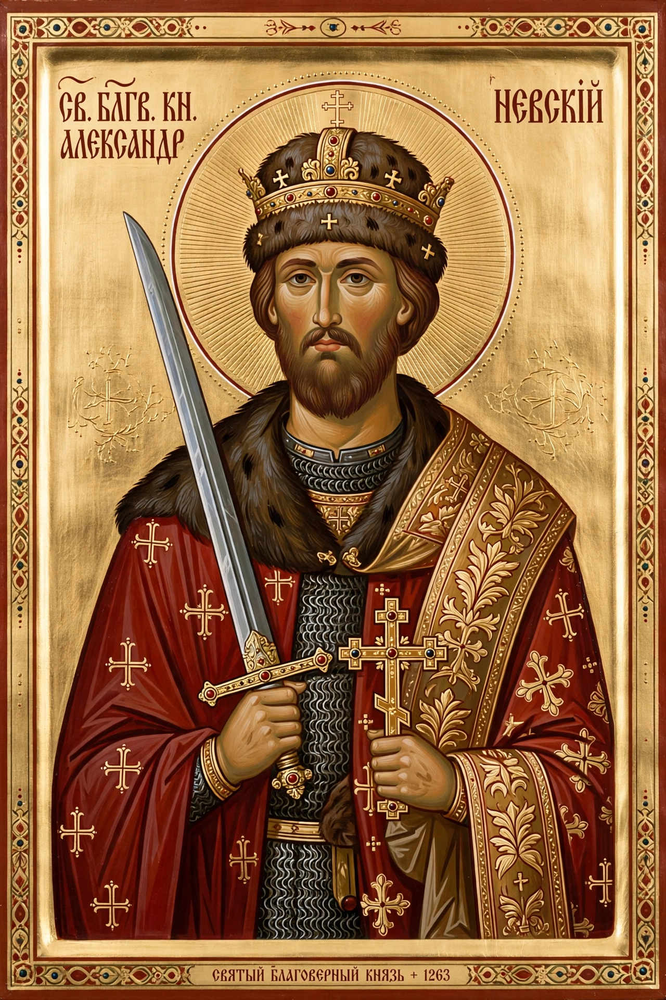

Alexander Yaroslavich Nevsky (1221 – 14 November 1263) was Prince of Novgorod and Grand Prince of Vladimir during the difficult period of the Mongol invasion of Rus'. He earned his epithet from victory over the Swedes at the River Neva (1240) and won lasting fame by defeating the Teutonic Knights on the ice of Lake Peipus (1242). Canonised by the Russian Orthodox Church in 1547, he became one of Russia's archetypal national heroes.
 | |
| Born | 13 May 1221, Pereslavl-Zalessky |
|---|---|
| Died | 14 November 1263, Gorodets |
| Reign | Prince of Novgorod (1236–40, 1241–56, 1257–59); Grand Prince of Vladimir (1252–63) |
| Father | Yaroslav II of Vladimir |
| Venerated in | Russian Orthodox Church (canonised 1547) |
In July 1240 a Swedish expedition landed at the Neva; Alexander's small force surprised and routed it, earning him the name "Nevsky". In April 1242, on the frozen Lake Peipus, he defeated the Livonian branch of the Teutonic Order in the famous "Battle on the Ice", checking German eastward expansion and securing Novgorod's western frontier.
Judging resistance to the Golden Horde hopeless, Alexander pursued submission and cooperation in the east: he travelled repeatedly to the Horde and to Karakorum, obtained the patent (yarlyk) for Vladimir in 1252, and helped enforce the Mongol census and taxation in Novgorod. This dual policy — fight the Catholic west, submit to the Mongol east — shaped Russian strategy for generations and remains debated by historians.
Alexander died at Gorodets in 1263 while returning from the Horde, having taken monastic vows as Alexius. Peter the Great transferred his relics to the Alexander Nevsky Lavra in St Petersburg in 1724. Sergei Eisenstein's 1938 film Alexander Nevsky, with Prokofiev's score, revived his image on the eve of the Second World War; the Soviet Order of Alexander Nevsky was instituted in 1942. In a 2008 nationwide poll he was voted the greatest figure in Russian history.
From Wikipedia, the free encyclopedia.